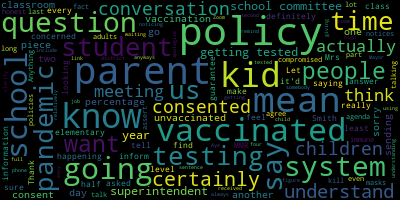

AI-generated transcript of October 18 - Regular School Committee Meeting
English | español | português | 中国人 | kreyol ayisyen | tiếng việt | ខ្មែរ | русский | عربي | 한국인
Back to all transcripts
[Lungo-Koehn]: call by using phone number 13126266799. Please enter meeting ID 96317884451 when prompted.
[Unidentified]: Madam Secretary, will you please call the roll?
[McLaughlin]: Member Graham. Here. Member Kreatz. Here. Member Laughlin. Here. Member Mustone. Here. Member Van der Kloot. Member longer current I mean Maryland current present seven present here to, I'm sorry.
[Lungo-Koehn]: So is also here, an absent. I'm not sure if we have any student representatives on the call. Have they been appointed yet.
[Edouard-Vincent]: So we do have, we do have our student representatives available Dr cushion, would you like to just give the update on our two student representatives.
[Lungo-Koehn]: Mr. McLaughlin, thank you. There you go.
[Cushing]: So we had our first meeting with the we're calling the Medford Student Advisory Council. I believe in your packet, there was a description of it. We met with the students last week, all of the students had either work or sports commitments this evening, so they weren't able to make it. The students actually wanted me to come to you with a question that we collectively had. Would you like just two representatives consistently or would you like to have a rotation so you hear a variety of student voices at times? So something to think about. The students have brought that up.
[Lungo-Koehn]: Great. Thank you, Dr. Cushing. So I'll just let Dr. Cushing know our thoughts throughout the week by email potentially. Okay. And if we could all rise to salute the flag.
[Unidentified]: I pledge allegiance to the flag of the United States of America, and to the republic for which it stands, one nation, under God, indivisible, with liberty and justice for all.
[Lungo-Koehn]: Is there a motion on the floor to approve the consent agenda? Motion to approve the consent agenda. Seconded by second member McLaughlin. All those in favor?
[Ruseau]: Aye.
[Lungo-Koehn]: All those opposed? Motion passes. Member Ruseau.
[Ruseau]: I'm just noticing there's four people in the waiting room. I don't know who's doing all that.
[Lungo-Koehn]: Dr. Cushing, thank you. Thank you. We have report of superintendent.
[Edouard-Vincent]: Good evening. So it has been wonderful that we have been able to resume some of our in-person activities at the Medford Public Schools. Last week, we were able to dedicate the new Priscilla Hoff cosmetology program space on the vocational side of the house. Also, we were able to gather at the Roberts Playground for the presentation of a communication board for our nonverbal and autistic students and all students at the Roberts School, thanks to the generous donation from the Doug Flutie Jr. Foundation for Autism, who has partnered with our police department. The Brooks PTO was also able to host their fall fest yesterday, and that was a tremendous success. In addition to that, we had eight of our Italian students from Medford High School who were able to attend the Cavalleria Rusticana Opera at the Boston Lyric Opera. So those were some really positive things that have been happening within the district. On that same note, last Wednesday, Medford High School hosted in-person PSATs for 550 sophomores and juniors. That is the first time that we actually tested both sets of students at the same time. In addition, we tested 64 of our seniors were able to take their SATs in school at Medford High School. So we are very grateful to Stacey Shulman, our Councilors and teachers who made this happen. We are thankful that they organized the testing in a safe environment and served as proctors as the tests were given. I say it often that teamwork makes the dream work. Medford High School now has proper signage at the entrance way. Yes, the official Medford High School sign was hung and is posted. We want to thank Mayor Lungo-Koehn, the Building and Grounds Subcommittee, and John McLaughlin for all of their work for making this happen. It looks wonderful. And we wanna thank the contractor, White Light Visuals, who designed it. And last Friday, it was put in place on the front of the building, and it really looks great to have the official front entrance with a proper signage. Thursday, We had some wonderful news happening in Medford at the Mustang football game. The Mustang cheerleaders hosted cheerleader for the day for over 25 students from our community. It was great to see the younger students cheering alongside the high school team. Once again, it is exciting that our students can go back to mentoring our younger students, something that came to an abrupt halt due to COVID. As we have stated, these social connections are important for all of our students. And I want to thank the chair leaders for hosting that event and reaching out to our younger students and also congratulate the football team on another win. So we were all a little surprised and saddened to hear this morning of the passing of former Secretary of State General Colin Powell, who was not only the first African American to lead the Joint Chiefs of Staff, but also the first African American to serve as Secretary of State. Medford was honored to have had General Powell visit the students at the then Brooks-Hobbs Complex in May of 1993, while he was serving President George H.W. Bush as chairman of the Joint Chiefs of Staff. During that visit, he was introduced to the students at the time, which the principal of that school was the first African American principal in Medford Public Schools was Miss Shirley counts. So General Powell told the students to never limit their dreams, work hard, and success will always come. May General Powell rest in peace. CCSR. They are looking for community support. On Saturday, October 30th, from 10 a.m. to 1 p.m. at Hormel Stadium, CCSR is hosting the Halloween Relay Race to raise funds for Hope for Haiti. Each relay team is made up of four people, and the entry fee is $20 per team. Any student, parent, caregiver, staff person, or community member can participate. make up your own teams and contact Mr. Michael Skorka by October 22nd. Hope for Haiti works to reduce poverty in Haiti and is focused on providing support and partnership for the Haitian people. Other upcoming events. Our unified basketball team has two more home games to wrap up their successful season. Come and cheer them on at the high school gym on Thursday, October 21 and Wednesday, November 3 at 330. We have more good news. Another micro pantry is also coming to Medford High School. On October 20th, this coming Wednesday, the vocational school will be having a micro pantry ribbon cutting in front of the vocational entrance. It's hosted by CCR and that will be taking place at 1230 on Wednesday. On the same Wednesday, October 20th, is both the college and career information event for our students with disabilities, and their parents and caregivers from 530 to 630 in room. And immediately following that, the college and career information fair for the entire high school complex begins at 630 in the high school gymnasium. Please be advised that face coverings must be worn by all in attendance for these in-person events. Also on October 20th, CPAC will be hosting a virtual discussion about adaptive physical education and unified sports. This will be a Zoom call from six to 8 p.m. And Ms. Andre, our adaptive PE teacher, will be the guest speaker. On October 21st, will be our eighth grade open house at the high school complex at 6.30 p.m. So for all rising ninth graders, students who are currently eighth grade right now, they are invited to the Medford High School complex on October 21st at 6.30 p.m. and that will be their open house. On October 28th, the Missittuck Elementary School hopes to break the record for most people reading the same book on the same day. This year's book is Amy Wu and the Patchwork Dragon by Cat Zhang. So I hope you, if you haven't reached out, I hope you've been tapped on the shoulder to be a reader. Also, on October 29, the Medford Chamber of Commerce, they're going to resume their annual business trick or treat in the squares from three to 5pm for the community to take part in that, if they would like to. Also, in closing, I have one brief update on transportation. So we have communicated on a few occasions in the last month that we were anticipating some potential challenges regarding student transportation. These challenges are attributed to, in large part, to the nationwide shortage of bus drivers affecting so many school districts. Unfortunately, today at several of our schools, those challenges came to fruition in ways that were both frustrating and confusing to many of our families. So we have been working very closely with our primary bus vendor, which is Eastern Bus Company, to alleviate these challenges as quickly as possible. Regrettably, the challenges to the driver workforce were compounded today by some missteps in communication, particularly with regard to buses at the McGlynn, Andrews, Brooks and Missittuck schools. So please know that Mr. Murphy is available to take specific questions this evening, in the event that any of you have been hearing from families about these challenges, but for now we want to convey our apologies to the families who waited for incredibly long periods of time for their child's bus. and note that we are actively working to improve both the communication and logistical protocols regarding our transportation services. Thank you.
[Lungo-Koehn]: Thank you, Dr. Edward-Vincent. Number two, we have public health update, director of health services and assistant superintendent finance operations will report on the Medford public school student and staff COVID testing program, Medford public school personnel, vaccination rate and COVID-19 prevention protocols.
[Hines]: Good evening. I'll start with the update in terms of Medford's numbers and our testing program. So positive COVID-19 case data seems to be improving across the city. The number of positive COVID-19 cases in Medford as of October 12th was 71. As a point of comparison for the first 12 days of September, there was 131 cases so there's definitely an improvement so far this month. We hope it keeps the same kind of line in terms of our in school testing of last week, despite the four day school week. Medford Public School nurses completed 4,331 COVID-19 tests. This included 326 pooled surveillance tests in which we found one positive individual for a percent positivity of 0.3%. School nurses also saw 51 symptomatic students during school day who were either able to be tested in the nurse's office prior to dismissal or were referred to testing. Outside of our school testing program, there are three positive individuals from the Medford Public Schools community that contacted our nurses who were then able to complete the appropriate school-related contact tracing. Thank you.
[McLaughlin]: Member McLaughlin. Thank you. I just wanted to ask, in what instance, can you explain to me, in what instance would a classroom be required to test if they have not been notified of a close contact? Is there, I had gotten a constituent who said that they were asked to test their classroom, but had not been notified of any close contacts. So I'm just wondering what instance that might occur.
[Murphy]: I believe so that would be the so kindergarten classrooms and that's one of the other pieces we're going to update you on tonight that you recall in the last meeting that we outlined a series of additional protocols that we were putting into place across kindergarten levels. The rationale being that these are students in their first formal education environment there's a higher. amount of dysregulation and it was proving that it was both more transmission and more challenging for our health services staff to complete contact tracing. So as of now, we're doing individual PCR testing all kindergarten classes every day. This is our third week in which we've been operating under those heightened protocols. And we've seen evidence, both of more reliable contact tracing and less transmission. And so, in light of that, our update this evening is that we do anticipate in the relatively near future, scaling back the amount of testing that's happening at kindergarten. That's a decision that's grounded in public health data, but also is reflective of the fact that these are not unlimited resources and so the cost of the covert testing has more than triple. when we instituted kindergarten testing on individual PCR basis on a daily basis so that's not to say we're running out of money. But when we're facing the potential supply shortages with respect to tests, and we're seeing the data. change considerably since we instituted those additional protocols. You know that's one of the pieces that we said we would monitor on a week to week basis so as of right now we're still doing the individual PCR testing but if the data continues to move in that direction we'll be going back. First to multiple days of PCR individual testing, kindergarten level and we can explain the rationale for that but basically it's, we don't want to have to wait the second day to go through the reflex testing, because of the challenges that come to with contact tracing of children that age. but also because if we don't, eventually we can get to the point where it's not really supported by the data. But the reason that you would see that in that particular instance would be it was a kindergarten class. And I thank you for the opportunity to also move ahead in the update, because that was the next thing we were going to say.
[Ruseau]: Mayor?
[Lungo-Koehn]: Member Ruseau?
[Ruseau]: Thank you. I apologize for using my phone. I'm just giving somebody the link to the Zoom. But anyways, I just want to make sure we When we say we're testing, I feel like we should always include in the second half of that sentence, we are testing students that we have received consents for, because we are definitely not testing every student in any classroom in this district, is my understanding, so.
[Murphy]: I can't say that, I don't know that to be true. There are classes in which the percentages are very high, and I would never say with certainty that we're testing every student, because the student could be absent that day, and therefore the student doesn't get tested. And certainly there's a fraction of the student population that have not consented. And it varies a little bit school by school and across grade levels, as you know, as we've previously reported, but the elementary level, we're typically above 90%. And I would be surprised if across the district, there is no class in which there happens to be 100% of the students who are participating. I just, I don't know that for sure, but if we're at 90% across the board, the likelihood that that many classes in school likely is there's somebody out there is at 100%. But yes, to your point, that these are testing of students that have submitted consent forms, and who are present and at the high school level who are in fact, you know, getting tested that day.
[Ruseau]: And can you remind us again why it is we cannot inform parents of the percentage of in the elementary level, at least where it's relatively easy and I certainly understand at the high school, it'd be a full time job to figure out. But why in the elementary level, we can't tell parents the percentage of students in their child's classroom that are getting tested that who have consented, I don't.
[Murphy]: Well, I mean, I think we have reported on that. So I can't say with certainty that that number of the percent participation is currently posted where the other resources are, but I don't think there's any reason we couldn't do that.
[Ruseau]: No, I'm sorry. Let me clarify. I don't mean the kindergartens. I mean, I have Mrs. Smith.
[Murphy]: Yeah.
[Ruseau]: What percentage of kids in my Mrs. Smith's class have consented. I understand that kids are missing on days of testing, but parents who are very upset to find out that testing is really only happening if parents return a piece of paper. are left to their imagination, you know, is the 90% mean like half my class isn't getting tested, or is it one kid that's not getting tested. And I understand we're not going to, who's not consented, I keep saying tested, but I mean consented. But it just doesn't seem like a piece of information that, especially for parents who are particularly concerned about their unvaccinated children because they can't be vaccinated yet. The parents will take their kids out of school the day they can be vaccinated to go get them stabbed with a needle. To me, it's not an unfair piece of information. And we've had this conversation around MMR and other vaccinations. And the answer I've been given is Privacy, I just find interesting.
[Murphy]: Well, I mean, I'll give a slightly different answer. I don't know if it'll be any more helpful than that answer, but I'm happy to expand a little on it. I think that, first of all, when our percentages, particularly at the elementary level, are as high as they are, generally at 90%, You can find out in a few seconds exactly what they are, but it's in the 90% range and a couple of cases a little bit over. No family should be concerned that their child is in a class in which half the students are not participating in testing, right? It is the vast majority of students who are participating in testing. It is, I think to your point, not 100%. And as you can probably tell, by the regularity and I hope the thoroughness of our communications and our solicitation of consent forms, it is the district's position that everyone should participate. We think this is an obligation that we as community members owe to one another to participate in this program and make sure that we're keeping our transmission rate as low as possible. At the same time, it is not a precondition for going to school. And it's candidly not going to be a precondition to going to school. And I think when we think about how we message and how we package the messaging together in terms of trying to incentivize people to participate in the program, I do have concerns about doing anything that is going to somehow stigmatize students who, in most cases, their families are choosing that their child is not going to participate. And we talked a little bit about at the previous meeting, I think it was the one right before this, about how we knew that we had obstacles coming into this year for getting students to participate that didn't exist last year, right. The conversation nationally and locally has evolved, I think, reflective in part that we think we're sort of coming out of the pandemic as opposed to being in the throes of it. And there are folks in our community and every community who feel that the regularity of the testing is no longer in their child's interest. From a public health perspective, as Ms. Hindson speak to, we would disagree with that. but we respect it. And I don't want to do anything to indicate to any families that we don't respect the choice that they make for their child, even if we disagree with it. And so I think from a strategic perspective, we think it most prudent to continue to provide the most up-to-date information as possible, to continue to try to make it as easy as possible to participate, and to continue on a regular basis to encourage people people being parents and caregivers to have their child consent and to participate. And that's the message that we will continue to generate. And I would say, based on the percentages, I think that strategy has been successful by and large.
[Ruseau]: Just have one more question for me. Three years ago, which I know was before both of your times, I asked the question about, so we're not at 100% for MMR vaccinations, although actually in some of the schools, I was looking at the data recently, there are actually, I think, two of the schools are at 100%. But I asked the question because this was a real life situation with a friend of mine whose husband was undergoing chemotherapy. And the question was, Could we guarantee that the children of that person with a compromised immune system was not in a classroom with unvaccinated kids? And the answer was not only could we not guarantee that, but we could not inform that family of that, which I found to be a little surprising and I would enjoy a long conversation about ethics on that. So I guess the same question is what I'm asking now. Do we have kids who at home have a parent who is a severely compromised immune system, who are sitting next to students who are not even getting tested? And do we follow that up and see and do we Do we even track it down or do we just cross our fingers the kid doesn't go kill their parent, which was really the source of the initial conversation I had with the parent, because they were very concerned and the kids were suffering severe anxiety that they were going to school and they want to come back and kill their father.
[Murphy]: Yeah, well, I would actually like to, if we could, as you said, this is a question that was posed prior to Ms. Hines not being in our current positions. I'd like to come back and perhaps revisit this question at a later date because, one, the vast majority of our kids are testing, so chances are, if someone's in that situation, the student next to them is participating in the testing program. But that does not alleviate the concern in its entirety that you raised. And I would like to research a little more thoroughly sort of our processes for analyzing a question like that that's being posed from a family that has that concern and what our processes are for determining the available accommodations. At the end of the day, no matter what we can do, what processes we put in place, it's never going to eliminate risk in its entirety. And I know that you know that, and I'm sure that the family knows that. So while I think we should take a closer look at it and see what processes are in place, and perhaps, to some degree, our analysis may differ over the course of however many years. But at the same time, I want to, as a disclaimer, say that There's, there's risk inherent in any communal activity and school is a communal activity. It's why it's not meant to be done via zone. But I'm happy to revisit. Thank you. There are a couple other pieces that we just wanted to share with the mayor, if we could. First, I wanted to make sure the committee was aware that we had said at the beginning of the school year that our air balancing vendor, who did a lot of work with us over the course of several months to do air exchange testing is back in the district this week. And so if you're out around schools, you may see some of the engineers coming through and this is not in response to any specific concerns that we have with regard to air quality, but Part of a due diligence measure that was a part of the argument that we reached at the beginning of the year when we established working conditions that we do periodic testing and sporadic testing throughout buildings to see if there are any areas of concern. And then from that, we'll be able to identify certain HVAC priorities that we have systems that might need some extra maintenance or If there are a few instances in which some of the systems need to be repaired, it'll help us to identify those and prior to them accordingly. I mentioned the piece about the kindergarten. We did provide in the public health update memo that you received today, the vaccination rates. I had alluded to them in our last presentation. And frankly, just held off because we were just having a few more conversations with partners and want to make sure that they were aware that we would be sharing that information so you can see that our school by school level vaccination rates. You know, candidly, I think our number, I know that our numbers are higher than what's reflected in this memo. Ms. Hines' staff is continuing to work through each bargaining unit in each school community to make sure that we've in fact had contact with each and every one of the 930 employees. And as those contacts are made, proof of vaccination is furnished or a commitment to obtain vaccination is often proffered. And as that happens, you'll see those numbers go up over the coming weeks and months. And we will be revisiting, I imagine next month, a policy of the district with respect to vaccination status. And I would imagine that the recommendation forthcoming from the administration on that note. The last piece, I think it's the last piece. So we've been doing these public health updates now for, you've been doing these public health updates now for over 18 months. Each time the committee has presented Ms. Ray and then Ms. Hines, Oftentimes myself sometimes, Marianne O'Connor from the city have provided you with the most up to date information related to the public health situation in the schools. We have every intention, and we are fully committed to continuing to provide all that information. Similar to when we tweaked our communication protocols related to positives being identified in school communities. We did want to ask the committee to consider the effectiveness of the communication of it being a standing agenda item. We want to make sure that you have this information. We want to make sure that we have a memo to you each time you meet, so that you have the opportunity to ask us questions. But we've had a few points now, and Ms. Ray actually spoke to us about this as well, that when there isn't new information that we're presenting to you, The standing agenda item, and Miss Heinz appearance is in some, I think, to some degree, watering down the effectiveness of our communication so our suggestion would be that we consider transitioning this to a memo that you receive before each meeting, you will have the opportunity when that documentation is provided. to the week prior to the meeting to let us know if there are any specific pieces of this that you'd like to drill down on or ask questions to. I, of course, will be available in person. This time to be available via Zoom, and we would be responsive to any questions that you have. And when there's new information and something has changed, we would make a point of presenting that as its own agenda item so that we're able to focus our attention as a body and as a community on the new information as opposed to what is has to some degree, and I think what will increasingly become sort of a rote exercise, if we're not careful so. That's frankly food for thought, and something that we're going to, we're going to continue doing this for the time being. But it would be a piece that we think ultimately we could improve the effectiveness of our communication. If we're able to look at it as a standing memo in the consent agenda rather than what we've just done.
[Kreatz]: I'm happy to expand upon that. Thank you. I've been waiting to, okay, thank you.
[Ruseau]: I would certainly be fine with Director Hines not being at these meetings. I think that's, I don't say overkill, but it's a long day already, which I understand lots of other people are dealing with too, but that makes complete sense to me. I would not be okay with it being on the consent agenda just because there's a huge, This isn't news to anybody, an awful lot of people want to talk about the pandemic like it's over consent agenda items are frankly things that are like not worthy of conversation for the most part, and we should be talking about the pandemic, every time we meet. I feel very strongly that Well, I'll just say it, our vaccination rate for our eligible students is terrible. It is not acceptable, it is embarrassing. this pandemic isn't going anywhere if parents are going to continue to not get their kids vaccinated. And I'm just going to say it out loud. I mean, that's the facts.
[Murphy]: Mr. if I could just respond briefly that part of that issue is how we started this conversation internally because you're right. Our vaccination rate amongst our students is not where we want it to be. And I think we have to start rethinking about some of the ways we communicate what we need to do, because I am highly skeptical that the standing agenda item, or Ms. Hines being at this meeting, highly we all think of you, is actually gonna move the needle on the vaccination rates. So I'm with you that we need to hammer home the message, but I think we have to think about how we're doing that. And right now, The time that we spend preparing for this and making sure that we're prepared for any question you might ask and prepared to respond to any issues you may raise, I would frankly rather Ms. Hines and her staff spend developing additional communication strategies that we can use through the forums that may be more effective through the individuals on our staff who have the closer relationships with students and particularly some of our high needs students. and focusing in on how we can build make inroads and through those relationships to get those numbers up I'm 100% with you that we need to move the needle on some of these things. i'm just more skeptical that the time we spend preparing for this is actually going to do that.
[Ruseau]: I would certainly agree that. are talking about it in this meeting is not getting any. Zero additional children have probably gone to get vaccinated because we talked about it, or because you prepare for the meeting to have us ask you questions about it that's definitely, and I know there's limited time. But I also have two children in the school system, and while they do have have been vaccinated. I mean, I don't, we did talk about systems last week at last meeting, and they're much better in this area of our school system than in many of our other parts of our system. But if you tell me that you're sending notices out just to unvaccinated families, I'll believe you, but I don't think that's actually happening. It's just, we're not sending notices and reminders and trying to get people to get vaccinated. And Anything we can do to give you more time to do that, I'm totally for it. But I mean, I don't recall receiving anything that says go get vaccinated. I mean, I know that the superintendent's update has included that, but it's no offense to the superintendent, but it's a bit impersonal. I want my principal sending a direct message that says, you know, this is where we're at, and this isn't going to get us through the pandemic. Not just like, hey, it'd be nice if you could get vaccinated. Like, just be honest. These are all adults. The parents are all adults. Let's just be honest with them. This pandemic is going on for at least another two years if we can't get this dealt with. It's another year for sure. But, I mean, another year. Can that be the end of it?
[Hines]: So what I can speak to is that the school nurses are doing this on an individualized level, when they're on when they're contact tracing. we're asking are you vaccinated and if they're not they're mentoring both the student and the staff if the students eligible to encourage vaccination to give them vaccine sites. We've had a few students that, after being quarantined, decided, hmm, I want to get vaccinated, and our school nurses have helped make that happen. I think we do need to do it on a bigger scale, but it's not that it's not happening. It's just we're individualizing it to the student at this point, because that's what we're able to do with our time. Hopefully, as our data improves, we'll be able to put that on a broader spectrum.
[Murphy]: And I think that speaks to your point, Mr. says, this has to come from the individuals who have the capacity, based on the relationships, vis-a-vis the student, sometimes it's a personal relationship, sometimes it's a positional relationship. But you're right, that's where that has to happen. It is how we're doing it at the staff level, and we've been successful at doing that. And to some degree, I think it's, I think it's fair to say we prioritize from an organizational perspective, this doing the staff first and make sure those numbers are where they were going to be because frankly, our message would have a lot less credibility, the families. If we weren't able to demonstrate that we're at a very high level of vaccination among staff. The last thing I would just say is, similar to the point about the testing, we have to calibrate our messaging in a way that we think is most successful. If we thought that, you know, using sort of harsh tactics would push the numbers up, we'd use harsh tactics. And to that point, we've been criticized, and I'm We're all okay with that that's that we've signed up for about some of the rhetoric reviews we have made what is viewed by some as a value with respect to vaccines and testing. We think we have a responsibility to do that to keep people safe and we're going to continue to do that. Thank you.
[Lungo-Koehn]: Democrats.
[Kreatz]: Yes, thank you. Yep. So, at the last meeting. I had laryngitis, so I couldn't really get out what I was trying to say. And I sent an email off to Dave Murphy the next day. And I just wanted to thank Dave Murphy and Ms. Hines and whoever else helped with the website update to get the additional information and the links under one button so that it's easy and accessible. You just click on read more, and you can now click on the link to the test and consent form, staff COVID test and consent form, public schools positive case tracker a guide for understanding covert 19 covert exposure guidance never public schools kindergarten covert 19 prevention protocols and I'm hoping that you know once we have those vaccination status rates. We can also put that link directly under the scene. button and I already reached out to some families who asked me if I could, you know, put that on the agenda and I couldn't talk that night so it was funny. So they were really happy they tested it and they could open it and I can open it with my iPhone. It's a little bit different with my computer but I can I can open it with my iPhone I figured it out. Because I told Dave I couldn't do it and you just have to click on it in a certain way. And I think it's like one of my browsers works on my iPhone, but then it doesn't on the other one. But I got it working.
[Murphy]: Yeah, I appreciate the suggestion. And despite laryngitis, you know, we were feedback was was very helpful. And I think hopefully families are able to get what they need. The kindergarten protocol will be updated reflective of the comments that we made tonight. And I guess the vaccination rates will be the next posted up on that page.
[Kreatz]: And I haven't gotten this question yet, but would some of these documents be translated, or how would that work?
[Murphy]: Most of them should have the translated links in there, but if they don't, we'll go through and make sure that they do.
[Kreatz]: All right, thank you.
[Murphy]: All right, thanks.
[Kreatz]: Thank you.
[Murphy]: Thank you. Yep, thanks.
[Lungo-Koehn]: We have number three, common assessment.
[Van der Kloot]: Excuse me, I have two letters from the public that need to be included at this point.
[Lungo-Koehn]: Member Van der Kloot?
[Van der Kloot]: Sorry, guys. The first one is from a citizen Justine Deutsch Myers. She says. that she lives at 197 Playstead Road. What, if anything can be done, this is just what we were talking about, within the schools to increase the COVID vaccination rates in the 12 to 15 year old student group and then 16 to 19 year old students. According to the map published by CBS Boston last week, Medford's vaccination rate of 12 to 15 year olds is just 57%, and the rate for 16 to 19 year olds is 60%. Have there been vaccination clinics in the middle schools and MHS for students and or other initiatives to improve on these rates. Have you been collaborating or discussing strategies with other cities and towns nearby that have higher rates of vaccination. Our numbers are lower than neighboring cities and towns in our local region for, for example, 12 to 15 year olds Arlington has 90% Somerville is 83% Malden has 60% Melrose 76% and Medford is down at 57% 1619 year olds again similar. where Medford trails significantly behind the other towns. So again, if you could specifically ask, have we done vaccination clinics and are there any more scheduled? Are they effective? Would be my question to you. Have you reached out? Are there anything else we can learn from other cities who are doing better than we are? And I would add just is, do incentives help at all? I mean, you know, Do you do the, you know, win a gift card or whatever, just that help at all.
[Hines]: So if you don't get the virus, you wouldn't have to quarantine. I also think there's a portion of incentivizing immunizations that may touch over into like an ethical dilemma that I think we would have to think about. We have had vaccine clinics in the schools, they were last year, our middle school vaccine clinic that was geared towards the McGlynn and the Andrews. That was right after the approval for 12 to 15 came out was extremely successful. When I tell you the line was out the door the line was out the door. The high school was during the day and after school and that was less. Successful, the incentive for those students were that they got to miss class and they got to come and get vaccinated and then be monitored, which we thought was a great incentive. Not a lot of kids took the bait. We were hoping it was because more students had found vaccination outside of school. I think it's also important to recognize that that report was for all children that age in Medford. It's not necessarily a direct reflection of our public school students. I do believe our public school students vaccination rate is higher than that I do not have the exact data. I don't think it's much higher than that, but I do think it's higher than that. I also think there's a lot of work we could be doing what we would have to do in terms to get more vaccine clinics would be working with, you know, Marian O'Connor. and making sure that when they had the appropriate vaccine for the age groups, they had enough that we could sponsor a clinic. And then we would also have to coordinate with Desi to try and make a vaccine clinic because they do have that available. We would just have to determine a number prior to trying to coordinate that, which I think we could do, but it's something that we haven't been able to get to yet.
[Murphy]: The short answer is we're gonna do all that. So, and I'd love to do it all next week, it's probably not going to happen. But to the question of, are we going to continue to make affirmative efforts to close those gaps and raise our vaccination numbers? The answer is definitely yes.
[Van der Kloot]: OK, the next letter comes also from the chair.
[Lungo-Koehn]: We've partnered, the city's partnered with the schools and have done, I think, at least three vaccination clinics that we've advertised through the schools at the Medford Farmers Market. And that's outside City Hall. So we are trying to give our information to schools so they can press it out every Friday. We're doing all we can. And I know that the Board of Health is working to try to set up another vaccination clinic at the high school and the middle school.
[Van der Kloot]: Okay, that would be great. I do think for parents it's convenient if it's right at the school. So, so the second letter is from citizen Christina McCordy, and she's a 24 North Street. It's multiple questions.
[Murphy]: She first asked about air quality, we just do, we do each of them and respond so we don't lose them all.
[Van der Kloot]: Yep, air quality checks in the school buildings. And she said that we were told that air filters would be replaced often. Can we have an update on this? If the filters are not replaced often, she says the air quality cannot be guaranteed.
[Murphy]: Well, yes, the air quality testing is taking place this week, as I mentioned before. Those are the air exchange rates, slightly different. There's different types of air quality testing, but the kind that we were updating you on with regularity last year is being done this week, and we'll have more information about that.
[Van der Kloot]: She's specifically asking about air filters.
[Murphy]: Sure. So there are different HVAC systems across our different schools. And what is typically being talked about when we talk about the air filters is, and I think my terminology has stayed with me over the course of the last year, but if there are air quality engineers watching, you'll have to forgive me if I misspeak a time or two. We were using what was referred to as MERV 8 filters. After when we began to adhere to the heightened air quality standards for the HVAC systems that use those MERV filters, we upgraded to MERV 13 because that happened partway through last year. We have continued and planned in this year's budget to use the MERV 13 filters. They're slightly more expensive and because of the fact that they work that much harder, they have to be changed with more regularity. So I believe the MIRV-8s used to be changed twice a year. Over the course of a 12-month year, they would be changed every six months. The MIRV-13s are changed quarterly. And so that's part of our routine maintenance now in the areas of the schools that have those systems in place. So the MIRV-13s are in place. It's a very slight increase in cost because you have to buy more of them, because you have to change them out more frequently. But the answer to the question is yes, we are using the MRF 13s.
[Van der Kloot]: So would they just, I'm asking you, would they be changed around, say, December 1st again?
[Murphy]: Depends on when they went in, but they're typically changed quarterly at this point.
[Van der Kloot]: Quarterly. Maybe you could just give us an update when that happens.
[Murphy]: I can, but there's there are different facilities in different areas of different buildings use different types of filters so. It could be the case that in one way they're changed in December and another way they're changed in February and. I wouldn't want anyone to think that we're orchestrating some type of air filter cover up, it's just, it's a lot of infrastructure, and a lot of different maintenance a lot of different cycles but where there was an opportunity to use the filters that are consistent with the heightened air quality standards we are using.
[Van der Kloot]: Okay, second question. School staff have ongoing concerns regarding the room temperature in classrooms. Warm classrooms, she says, lead to more improper mask wearing. Also, when you cannot feel the AC, it is hard to know if the air is blowing, which leads to worries about airflow. Work requests have been repeatedly ignored, she says. So please detail what staff need to do to get these concerns addressed, and please make sure it is communicated to all staff.
[Murphy]: Sure, so staff do have available forms and administrators are familiar with the processes, if there are concerns around HVAC systems in specific rooms. It, you know, given the amount of infrastructure and given the age of some of the infrastructure, I think it's definitely the case that we have areas that aren't always at the optimal temperature. And as we talked about last year, with some of the changes that we instituted in order to meet the heightened air quality standards, we did have to cede a certain degree of control with respect to temperature. And there was greater variability throughout the year in terms of temperature. It mattered less, frankly, because there were significantly fewer students in the building, although I suppose the students that were there, it mattered a great deal. but I would imagine that that will continue to be the case, that there will be some modest refluctuation. I will say that while there's frequently a room or a hallway that's a little cooler or a little warmer than we would like, I don't believe it is the case that we have a widespread systemic problem with respect to temperature at this moment. There are absolutely days, and there will be days where a room will not be where we want it to be. But I do, I have some concern about, as you've heard me say before, if a member of the community is only hearing this snippet of the conversation. and it's the case that the governing body of the school system is drilling down on temperature problems, I wouldn't want anyone to infer from that that somehow we have a widespread temperature issue. I don't believe that's the case, but if there is a specific area of concern, then I would encourage the family of the student who's being affected or the teacher to raise that concern with the building principal and myself and Mr. McLaughlin and the buildings and ground staff will be happy to respond and make sure that if there is a problem, it's addressed.
[Van der Kloot]: Okay, number three, many teachers or staff at our school are interested in additional your air purification. The PTO at our school would like to purchase box fans with more 13 filters. They are under $100 each but most of our classroom teachers are interested. Can we request the use of code would bend to put toward this. For equity sake, we would like this offer to all school buildings, our PTO will also put some funds toward this is their formal process to request coded funds.
[Murphy]: I think there is a formal process that we have developed as an organization to allocate ESSER funding, and I'll be updating you on that later tonight with respect to our FY22 ESSER funds. I think I wouldn't want to see a PTO have to spend their resources on box fans or filters. I think that's the responsibility of the district. I am unaware of any teacher who has asked for a HEPA filter which is the portable device that increases the level of air exchange in a room. I am unaware of any teacher who has requested that type of device and has not received one, and we have, we have a decent stockpile of HEPA filters so that we can be responsive to anyone either who shares that concern or who through the air exchange testing it's indicated that there's a space in the building that we should try to increase that air exchange rate. So I would say again if there's a specific classroom that is of concern for whatever reason I would ask them to bring that to the attention of the building principal and our staff will be happy to address it, but we don't have enough HEPA filters, and I wouldn't recommend that we invest in HEPA filters for every room in the school or any school. I don't think that would be a good use of resources, but we have enough for any room that could have a temporary issue with its HVAC system that could result in a lower ACH rate, which is air change per hour. And as I said, I don't know of any responses, any requests that have gone unfilled since last year.
[Van der Kloot]: With the air testing that we're having done now, if there was such an area, would it automatically be put in?
[Murphy]: Well, our first choice would be to try to fix the HVAC system so we don't need the portable device.
[Van der Kloot]: Okay.
[Murphy]: But depending on the timeline, we would then have to filter. But they do exist. Okay.
[Van der Kloot]: Fourth and lastly, can we have an update on staffing issues? Are we close to returning to testing twice per week?
[Murphy]: Well, I know I wouldn't say we're close to returning to testing twice per week because I don't think at the moment, the data we have would support the expenditure of those resources so we have been had a highly successful testing program that when we needed to ratchet up in certain areas as I spoke about with the kindergarten program. What we have in place right now is producing over 4,500 tests per week and not more than three on occasion positive so far. So if the data were to change, then I think we would probably reverse course and employ a different strategy, but it would not be our recommendation at this point to expend resources with respect to staffing or testing supplies to test more when our positivity rate is thankfully as low as it is.
[Van der Kloot]: Okay, I received one more letter, just just as it came in as you were speaking. It says, this is from Ingrid Mercado 131 budget. Hello, I'd like to comment about the idea presented by Mr. Murphy of not having a standing COVID update in the agenda every meeting. My concern about taking it out of the agenda is that the public wouldn't be able to have public participation during the meeting. I think COVID topics are important and the public needs to be able to ask questions and get answers. In my experience, school committee meetings are the only way to get these answers. In the past, I've sent multiple questions to administration and I haven't received answers. She notes nurses at the school level are fantastic and give us great information during our PTO meeting, but sometimes we want answers at the district level.
[Murphy]: It's up to the committee, the committee establishes its agenda. If you'd like us to continue to present this information, I will say that it is absolutely not the only way individuals can obtain information. Individuals obtain information from us on an hourly basis as they should, because we work for them. And I would say that oftentimes, I do think that some of these presentations are not portraying accurately what is being reflected in the data. For instance, this entire presentation would suggest that we have an uptick in positivity and we don't. We have put in protocols that have kept the positivity rate extremely low. Our participation in testing is extremely high. And while I think we should always need to be available to share information and we always need to make sure that the committee is informed and through the committee, the community is informed But I do think the committee has to take into account the fact that if we're going to talk about this, there's only so much we can talk about in terms of the things that are going well. And so you have to, I think, calibrate whether or not this discussion is providing an accurate depiction as to what is happening in the schools with respect to COVID and what is happening with respect to the pursuit of the organization's actual mission, which is education. I leave that to the committee and we will follow the committee's lead as to how you would like to keep informed, but providing you with a memo and an opportunity to ask us questions, I don't think is going to in any way result in less information being available. And I think there's a chance that it could provide a more accurate depiction as to what we're actually doing in the schools. And that's why we put the suggestion out there. Thank you.
[Lungo-Koehn]: Number three, we have common assessment tool for school year 21-22, assistant superintendent for elementary and secondary education. We'll highlight the district's investment in the NWEA map assessment tool that will provide baseline data in light of the disruption to the accumulation of reliable data via the systems used by the Commonwealth of Massachusetts, i.e. MCAS, et cetera. Dr. Cushing,
[Cushing]: Good evening, everyone. How are we doing? So we want to just briefly touch upon our assessment system. This was a several months project in the making. And we have come up with what we're considering and what is nationally recognized as a precision measurement tool. So it's computer adaptive assessment. We'll speak a lot about this stuff later. I mean, essentially when we look here, it says 50-50 students are anticipated to know about 50% of the questions and be challenged on 50% of the questions so that we can get a true sense of where the entry point to the learning is. It's gonna give us K to 12 longitudinal data. This is a three-year contract right now that we've agreed upon. We're gonna provide our immediate actionable results. Test time should be about a period. All right, depending on the assessment you're taking, it's aligned to the master's curriculum frameworks, and it is a MCAS, ACT, and SAT predictor. So this selection process brought together directors, principals, assistant principals to really drive the selection process. We started by initially looking at I think five companies and five assessment products. We narrowed it down to three assessment products for some pretty intense scrutiny. And in the final meeting, it was pretty clear that the unanimous or near unanimous decision was to go with NWA map. And so I'm not going to reveal who the others were because they're also very good assessment systems but this was one of ours. So, who's NWA you can see here they were over 40 years serving schools, they're nonprofit, they're for kids, I do want to touch upon something here quickly. They have this great expertise, not in just overall, but in really looking at the special needs of early learners, Spanish students, Spanish speaking students and other ELLs and inclusive design principles. And then here you can see their reach into Massachusetts and nationwide.
[Galusi]: So MAP growth is a computer adaptive test, which means that when students take the assessment, they will be challenged with questions if they need to get a little harder, or they will decrease if the students need the questions to be a little easier. What that looks like broadly is that when a student, you can see here, when a student takes the test, if they're doing well, they're going to keep increasing the level of questions that the student is being asked. When the student gets a question wrong, they'll dip for the next question and it adapts to where the student is to get their scaled score. You will see here map growth not only helps groups of students based on achievement level and common zone of proximal development, but it also helps guide with scaffolding and differentiation. Next slide. Oh, there you go. And so part of the data that teachers will also get out of these assessments are ways to help them with the scaffolding and differentiation in the classroom so that they can see the students that need a little bit more remediation versus the ones that need to be challenged a bit.
[Cushing]: All right, so what does MapGrove cover? Actually, in our selection process, one of the things that we wanted to make sure that we had was an assessment system that covered math, ELA, as well as science. We didn't want to have to purchase a separate assessment system to help us with our science assessment. And this was a limiting factor for several of the products that we looked at. So map growth will be able to assess students in grades K through 10 and science and students grades three through 10, which will also provide us that longitudinal data. Here's some of the core specific information that we'll be getting from this, primarily a growth assessment with some skills checklist as well for our earlier grades. There are over 50,000 test items, and there's a high degree of depth of knowledge with 40 to 50% students will not see the same test question within 14 months. Content specialists use a nonprofit organization's cognitive complexity framework to assess the level of rigor and challenge and the cognitive complexity of the questions. So mathematics, they're tagging items with aspects of rigor to provide a clearer and more helpful distinction and to really think about driving kids towards higher order thinking skills. The reading passengers featured diverse authors and varying levels of text complexity, and then science includes two-dimensional and three-dimensional models. So here's just a brief video. I'll try to make it larger so you can see. It's about 70 seconds long. that you can see how the technology enhanced questions actually work and this mirrors the state assessment that students will take later on in the year.
[Unidentified]: No, it's the video, yeah. There's no sound? I wouldn't like to see my scores.
[Van der Kloot]: We can't see it at all, Peter.
[Cushing]: So the video will be posted as well so that members of the audience and school committee members can see. But as one member mentioned that it's difficult to see, we'll move forward.
[Unidentified]: Let me just give a second here.
[Lungo-Koehn]: So while this is showing, could I ask a question?
[Unidentified]: Absolutely.
[Lungo-Koehn]: So there's three parts to it. So the students will go on the computer and take this three different times, one for math, one for reading and one for science. How was it determined what grade level the students would take?
[Cushing]: So the students will enter at the grade level that they are in. And if we need to take a different look at a student, the adaptability of the test as the student goes through that computer adaptive piece will show where the student's entry point to learning is. So if they're in second grade, but they're at a third or a fourth grade level, the level of challenge will reach to where they are. And if vice versa, if we have a student who might need more support, and they're below grade level, the test will show where they're going to need those supports and will identify the specific standards on which a student will need that additional support. So can a parent opt out a parent, yes parents can opt out if they so choose, just because
[Lungo-Koehn]: I know in the second grade at the Roberts, like students were crying, kids came home, like really upset, including my own. And it just, I was told that was don't worry. It was after I, you know, you know, contacted the teacher and the reading specialist, don't worry. They were given second through fifth grade assessment and he, you know, he should have been given K through two. because obviously these kids are behind because of the pandemic too. So I just want you to know that kids are out there struggling and coming home upset. And for me, I had to figure out what math test did he take and then come to find out it was the math test. So now I know the kids have to go through all three. It's a little bit, little bit concerning and I think it's just something you should.
[Galusi]: Yeah, let me just speak to that one. So I think there are where we are taking students are taking map growth at all levels K to 12 that's the title of the of the test that students are taking. there are other components on that platform in terms of like varying tests that you can, that teachers will have access to that they can utilize for like quick skill checklists and things like that. But the data that we're looking at first and foremost is the map growth assessment. So at the K to two level, that's the early literacy screener. So it is K to two. I'm not quite sure in that instance, mayor, I can look into it, but if there was, If your child or some other children received the wrong test, I can look into that. The section that I was just about to speak to is that MAP growth, there's the accessibility and accommodation aspect to the test. So any students that require any sort of access or accommodations on the test absolutely receive it when they're taking the MAP growth test. Many of the accommodations and accessibility features are embedded, just like they are on MCAS, and so some of them are universal. If you want to go to one of the screens, like this is, I know it's really small print, I can just name a few, but like there are universal ones that are like highlighter tools or amplification, text to speech, especially in math. then there are also going to be some accommodations that are front loaded in the platform by our educators for students that require like an additional level of accommodation per an IEP or a 504. So if students are require having a test read to them by a human reader, or for math by the actual test that is going to happen during this assessment period as well. The teachers accommodation features onto the platform, so they are there for the student and ready during the testing session. I do think. You know, sadly, this is the first year we're doing this, and I do think there's definitely going to be a little bit of a learning curve for students as well as staff in terms of administering this assessment. I do not certainly like to hear that students went home sad and upset over an assessment. I can absolutely look into that. I was not aware that that happened, And so, you know, I do apologize for that, but I do think there'll be a little bit of a learning curve this year until students and teachers are comfortable with the platform.
[Lungo-Koehn]: Then maybe just a suggestion to take a survey of some of the teachers and find out, you know, before you go, we go giving, if one class only got math before we give reading and science that just, you know, conversation even if it's a zoom after school with some, some teachers just to get feedback because I'm hearing that I am hearing that a lot and it will we went through the pandemic and it's the first year doing this to know that, you know, kids are going home saying they're struggling or they were crying in school or to hear their multiple kids in one class crying, it's just, we want to make sure we're not doing that to our kids who have been through enough, you know, so I would just you know, respectfully ask that you talk to some of these teachers that I've talked to and get some feedback on it. Sure. Member van de Kloot.
[Van der Kloot]: Yes. Could you just clarify? So the test has already been given to students K to 12?
[Galusi]: So we're, I don't know if maybe we should finish the presentation and then take questions because some of your questions will be answered in just a minute. Does that make sense? Or should we just answer?
[Cushing]: No, I think finishing the presentation would be the best.
[Galusi]: OK, so I think there are these slides here. And I know you have a copy of this that you can see some of the other examples of the accommodation features. And then I think just one last slide just shows an example of what the test looks like. You can see that there are icons at the top for students that receive any sort of accommodation. And when students take this test, it does lock the computer. It locks the Chromebook so that all that they can access is this assessment so that they can't kind of get out of it and, you know, get lost in something else that would be accessible on the computer.
[Cushing]: So one of the things that we have to be concerned about are our speedy test takers, those kids who want to just click, click, click when they get to a point. And you want to know something, this might be seen more as a video game than an actual assessment. And so just want to click right through and done with it. Another assessment system that we looked into actually gives the kids a video game when they're done, so that they can be engaged. But what all the assessment systems that are computer adaptive do is they now have the ability to say like, whoa, this kid's going too fast, given what this question should take for time. And so students will get a sloth to basically tell them to slow down. Then on the computer screen for the teacher, it will pop up that Scott Brown has been paused. and the proctor pin needs to be entered. So the proctor will walk over, have a conversation with the student, and then enter the proctor pin at the bottom to restart. And then this is an example of basically, once that conversation is had, of getting a better sense of where the student is than just allowing them to continue to enter rapid-fire wrong answers. So I just want to bring some context to the data. So these are normed frequently. The last norming happened against Massachusetts assessment data in July of 2020. And so it really is enabling us to compare trends against recent student performance and allowing us to give just in time supports to assist students who have been negatively affected by the pandemic or other learning gaps that they have. And so then, so there's norms and comparing students achievement and growth. We can get growth projections for students. And then there's also good strong linking data and linking studies that are done to connect individual scores to projections of state specific proficiency. Here's a parent and caregiver report. These parent and caregiver reports were written by with a non educator lens, so that they are easily understandable, not covered in jargon, and really allow parents and caregivers to understand the information very easily. Before I hand it over to Ms. Galussi to close us out, I want to thank the entire team of administrators and school leaders who really helped to come to what I think is a very good decision. And in particular, Dr. Nicole Chiesa, who had a preexisting relationship from work that was done previously in district and has been instrumental to helping us get this off the ground. with some very technical and very in-depth student uploading and teacher training as well. Bye.
[Galusi]: I think that's important to note that we made this shift as a district, and as Dr. Cushing said, it was pretty unanimous, the people on the team, the administrative unit on the team, and educators, that this is the shift that they wanted out of the three assessment tools that we were vetting out. If you recall, we had a pilot program going for our literacy screener, which we are mandated to do for the Department of Education, have a literacy screener for students in kindergarten through second grade. The teachers and students at then Columbus were using Map Growth, and the other three schools were using Lexia Rapid. Part of the shift to jump fully on board for MAP, there were a couple things at play. One was we did feel that this would be much more streamlined for parents, so that they're not receiving a separate set of parent reports in math and in science from MAP growth. and then a literacy screener from Lexia Rapid. Additionally, when the literacy team did our work with Lexia Rapid, they were very honest in letting us know that they're pretty much going to be dissolving Lexia Rapid in the next year and putting all of their kind of time and effort into Lexia Core 5. So I think they themselves as a company are making the shift out of the screening game and more into the the content game. So that also was a reason for this shift. So the families and the staff and the students at the then Columbus, now Mississippi are going to be very familiar with math. It's what they've known for the past two years. It's just now it's a big shift for the other three schools. So as Dr. Cushing said, it's math and ELA from K all the way to grade 10. science will start in grade three. And I believe science will start in grade three mid-year. So we're doing these assessments three times a year, October, February, and June. The official October date for the opening of assessment is today. It will close November 5th. There were many teachers that were eager to start the process early, especially those with the MISATCH, because they're familiar with this. So Dr. Chiesa and I did open the testing window a little early, knowing that there'll be a learning curve for three schools and that it might be a little easier on the staff. So there are some staff and some students that have already begun this process. All elementary staff were trained and all secondary staff are getting trained on the platform and the assessment tool Wednesday. This year, we will also have staff will be engaging in data dives with the math growth trainers so that they will come in and they will work extensively with our staff on the data components and the data sets, how to utilize it, how to read it, how to explain it to families, and how to use it to then push their instruction and student growth.
[Cushing]: So the other thing is, is that I do wanna also try to tie this back to our strategic plan. This is directly connected to A3 under student assessment and is a significant investment in time and financial capital in trying to support our students' academic needs and to really provide the resources that they need to be successful. And for any student relating to the mayor's question who may be fretting or crying or anything like that, please take a deep breath and realize that this is not an estimation of your worth. This is a tool to help us as educators to help you and to support you and to provide the resources necessary so you can be successful as you move through. Thank you.
[Galusi]: Thank you.
[Van der Kloot]: Did you still have a... No. So it's given at the beginning of the year in October, February and June. Oh, okay.
[Unidentified]: Thank you. Thank you. Thank you. That's right.
[Lungo-Koehn]: Next up, we have the school year 21-22 professional learning and development priorities. District administrators will discuss the priorities and key investments the district is making in the areas of professional learning and development. Specifically, the report will provide a briefing to the Medford School Committee on the use of the time contemplated by the school year calendar, the period half days and in-service days across all grade levels and within special education. Ms. Bowman.
[Galusi]: Thank you. Before we begin, I just want to clarify, or we want to clarify rather, that what we are going to present right now are our year long professional development initiatives and opportunities for staff. Of course, there are many other professional development trainings and opportunities happening throughout the school year and throughout the district, but what you're going to see this evening is a snapshot of the year long initiatives, and we'll start with.
[Bowen]: Good evening so for the special education department, we're doing a year long professional development regarding IEP goal writing strategies. We were lucky enough to get Alan bloom who is considered a IEP guru in the state of Massachusetts he's provided training throughout the state. He is a former special educator as well as a former associate professor at Simmons College. He currently works as an educational consultant throughout the state of Massachusetts. All of our special education staff related service providers will participate in this training. The series presents suggestions, ideas and strategies for writing effective IEPs. We're not saying that our staff are not writing effective IEPs, but this training is going to give them a different lens on how to look at writing an IEP, looking at accommodations, and getting prepared for the new IEP format that's coming out from DESE we anticipate in the springtime. So in this series, there'll be models and templates to guide participation with concepts in the IEP writing practice. They'll also learn tips for writing the impact of the disability statement, determining accommodations, modifications, and specially designed instruction, determining goal focus areas, writing effective current performance levels writing observable and measurable goals and objectives and benchmarks establishing the service delivery guide service delivery grid I said. And then. The participants will learn and immediately apply usable strategies, templates, and approaches to IEP development requirements. The overall outcome is to use these strategies to ease the process of IEP writing, establish system-wide procedures for IEP development, while maintaining standards of individualization for each student. We had our first session last week, October 13th, where Alan Bloom gave a introduction to the elementary and secondary levels. We will be having a full day professional development on November 2nd, and then there will be an asynchronous session in January, and then the last PD will be in March, where we'll use half of the full day of professional development. And that is for special education.
[Galusi]: Thank you. So for elementary, we have two year long professional development opportunities happening this year. One is our continued partnership with Hill for Literacy and the ECRI program, and the other is responsive classroom. So for ECRI, which stands for Enhanced Core Reading Instructions, it is a multi-tiered program that utilizes predictable and explicit effective teaching routines designed to increase the efficiency and effectiveness of reading instruction K to two. It is researched by the National Center on Intensive Intervention and becomes highly recommended. It is used with our journeys program and it is utilized for tier one during the whole class literacy block throughout the day so that every student is receiving this instruction. A typical ECRI lesson takes about 20 minutes from beginning to end. Prior to this year, our staff have had about four separate trainings for ECRI, from the science of reading to the ECRI program and what it looks like. This year, what we're doing is really doing, taking like that embedded PD model so that trainers are working with our staff directly through coaching and sustained training. So what does that look like? If you don't mind, Dr. Cushing, going on the next slide. This is just a graphic to kind of like illustrate what the training looks like this year. So there will be two models. There will be the training model in which teachers are working with trainers and getting that explicit push to their content knowledge and pedagogy. And then there's the in-person on the spot coaching model, which is really the piece that is said to kind of like push the teacher's learning and push that instructional growth. which benefits students, of course, in the outcome. This is done through in-person sessions. If you could please go to the next slide. So we have two coaches through the Hill for Literacy this year. We have Eleni Stedman, who's been with us from the beginning. And this year we also have welcomed Katie Leonard, Dr. Katie Leonard. So Lenny Steadman is working with the McGlynn and the Roberts, and Katie Leonard is working with the Missittuc and the Brooks. So the training is monthly, and it is a balance so some months, it is the training session, and it's 90 minute blocks. so that in a day of training, and actually the Missittuck just had one last week, the kindergarten got 90 minutes, their classrooms were covered, and learning still goes on for the students, but the teachers attended a 90-minute block of training. This happened in first grade, and it also happened in second grade. That's happening monthly, then three months out of the year, this school year, there's an in person observational, this is where the coaching takes place. And those trainers are visiting every classroom. We had our first one last September, excuse me, we had our first one last month in September, where the trainers came, they went into each classroom. and watched the teacher teach in every lesson. So it provided the opportunity for immediate feedback on those routines that they're doing a great job with, and those routines that are like a growing edge for them. And they were able to get that debrief at the end so that they knew what the next steps were going to be. Could you just go back to the next slide? There's also, I won't, oh yeah, there's a video here that just, this is our trainer, Eleni Steadman, when she was at the Roberts, and she's just doing a brief demonstration of what the EPRI lesson looks like. You can watch it in full a little later, but we can just show a few minutes if the audio works. It's a first grade classroom.
[Unidentified]: So it goes on.
[Galusi]: Sorry. If you watch that, you'll see more than one routine that she models because there's like five routines in a lesson to lead students through all of those foundational reading skills that are so essential at each grade level. The second initiative for professional development this year is responsive classroom. So I wanted to start, I know that last December, Stacey Shulman and I presented to you about our responsive classroom initiatives. And at the time, this was our final slide, which was titled Next Steps. and to date we have met all of these next steps and so I just think it's important to like start here just so you can see where we're going this school year. So last year our next steps were to continue responsive classroom for this year which we are doing. It was to make sure a morning meeting is built into the schedule and so that they can start their day with their peers and it continues to be. We talked about training and having coaching sessions for staff, which we did over the summer. We created that responsive classroom support group, or support team, rather, for each school, and we were able to provide responsive classroom training for all new staff during the induction week, as well as during the first week of school for all returning staff. The train the trainer model for that responsive classroom support team at each school was held in July. So now each school has a built in support team for teachers to rely on for guidance and support when they need some help, as well as to provide training within the building. and expansion of training to include power of our words component. So this is our goal for this year. And if we go to the next slide, this is what we will spend some time on the professional development day on November 2nd, providing staff. So, sorry, thank you. So we are going to shift. Now that teachers have somewhat of a solid understanding of morning meeting in the first six weeks, we're now going to focus on the power that our language has when we're dealing with students and even our colleagues. So we're going to take a look at our leadership and our language. And so just here is just some of the language that responsive classroom will dive into. So that there's reinforcing language to show students the positive effects that they can have academically and behaviorally. There's reminding language when students have to be, you know, reminded of expectations, redirecting language, and then envisioning language. So these are the components that we're going to be covering on November 2nd and in accompanying staff meetings for the remainder of the year.
[Cushing]: And now, Dr Christian will speak about secondary right so secondary impression development this year is focused significantly on two components, I will speak to more but. outside of the director's individual professional development. You know, Dr. Kieser is doing work with NWAMAP with her department. Faiza Miscon is working on that working with better lessons for professional development for her department. and others, so on and so forth. Our overarching goals for some of our time are focused on SEL in the classroom, making sure that we're using social emotional skills in practice with teachers, developing classroom and community supports, working to enhance group and partner work, and other things like that to try to create a physically and emotionally safe community that really develops within each classroom. and improve school culture overall. That's directly connected to implicit bias training. We have both of these initiatives have about 20 trainers who have been trained and can now go out and deploy. This will be the implicit bias piece is scheduled to be a significant part of our November 2nd and March 3rd professional developments with also deployment throughout the year at other times that we are currently working on. So implicit bias, just looking at the thoughts and feelings that are implicit if we are unaware of them or mistaken about their nature. So those are two significant pieces for our secondary. Some instructional strategies that I'm helping deploy at faculty meetings with our staff. This has already been done at McGlynn Middle School is learning targets and success criteria. These are specific evidence-based initiatives that help to set the learning stage for students. It gives them where they're going for the day. A learning target is one, per day. And the success criteria are basically how they know they have achieved. All right, it gives a very clear start to the day. And what's great about that is when we look at the CASEL social emotional wheel that was presented to you a few weeks ago. You can see that this directly hits on self-management, specifically the four highlighted areas of self-help and self-advocacy, because they know what they should be looking for. They see where they're going. They can organize their day. They can organize that individual lesson. They can manage their stress, right, because it's known to them. And then finally, they can set the goals and work toward them and monitor them, especially with success criteria. So that's about 60 seconds on what is several hours. So it's a strategy to support SEL in the classroom. And this slide is very familiar because it was also part and parcel to our previous presentation, but we wanted to make sure that it was here as well. Thank you very much. And any questions you may have.
[Unidentified]: Thank you very much. Thank you.
[Lungo-Koehn]: Thank you all. Number five, fiscal year 22 quarterly budget update, assistant superintendent of finance operations or report on the operating budgets progression through fiscal year 2022 with respect to both the Medford Public Schools operating budget and the fiscal year 22 ESSER investments.
[Murphy]: Thank you, Mayor. Thank you again. That's pushing if you could call up the budget update. So this brief update this evening is just a quarterly update on where we are with regard to our financial position, both with respect to the operating budget and with the extra budget. We mentioned in a few meetings, and it was discussed at length during the last budget process that played out over the course of late April through mid to late June, that the administration feels strongly that by accelerating certain components of our budget process, That will be able to position ourselves better, both with respect to advocacy for the school system but also a planning for the upcoming fiscal year so that's not per se what this. presentation is about this evening, but it is why we're making a point to keep you updated on a quarterly basis, where we are with respect to the budget so you'll see on the first, well the first slide is just our total budget number you remember the budget that you adopted on June 24 2021 for fiscal year 2022 is a budget of approximately $67.4 million. That is inclusive of the $3.7 million allocated by the city through the opera funding. And as we get into the more detailed slide right behind that, you can see that that is broken down. As we discussed in June that this school district every school district, the vast majority of the operating budget is going to be personnel expenses. You've heard me say before that we're an organization focused on cultivating well informed people, and it's that's work is being done by people. being overseen by people and being people who are receiving most of our money. That's the nature of a school system. So this is broken down and I've made a few notes to myself to explain to you why this information is important for you and why it doesn't matter at all. So first with regard to why this matters is your responsibility with respect to fiscal stewardship for the district. And as I mentioned at the beginning, we always have to be looking toward the next fiscal year and getting a sense as to what our budgetary priorities are going to be as we go into that budgetary process. That's particularly important and we'll talk about in the coming months when we talk about it from a staffing perspective. There's been a practice in Medford as I've come to learn that We're not doing much of our recruitment and hiring until the back end of the budget cycle. That's a practice that is putting us at a distinct disadvantage from a talent recruitment standpoint and it's one that we hope to remedy this year by moving our recruitment season forward several months. That's not a risk free proposition, as you can imagine. But we are choices essentially we can run the risk that a budgetary problem prevents us from accomplishing our staffing objectives, or we can continue to our current practice which provides for a certainty of not having been able to play as large a role in the educator recruitment season as, as we would like to as a school district. So that's why it matters. Why this doesn't matter is if you look at the numbers on the table on the left, you can see that we have a budgeted amount of 54. And obviously, hopefully obviously these numbers are all approximations. We have $54.3 million that is allocated for personnel expenses. Thus far, we've expended $5.7 million. So that represents pay periods essentially from July 1st until October 15th. So basically the first quarter. So, we have a approximately $5 million injection from the opera and Esther funds, and a $52.6 million of personnel expenses that are projected to be realized between now and June 30. That leaves us have a balance of about $20,000 which is essentially affection. because baked in to the personnel budget are things that realize significant savings and expenses that are either unanticipated or impossible to account for. What are some of those things? Vacancies, as you know, as we've updated you on a few occasions that we have vacancies at critical positions, both in the teacher ranks, paraprofessional ranks, We have a handful of administrative assistant vacancies currently in one administrative position that is vacant. All of that is counted toward what we refer to as our encumbered number. And so that means that if those positions were never filled, it would realize, even more savings. However, also incorporated into that budget is our knowledge that we have eight expiring collective bargaining agreements. And so should those CBAs be renewed during this fiscal year, and should a cost of living adjustment be part of those negotiations, that would eat away at some of those savings that are realized. But if there's a takeaway here, only three months into a 12-month fiscal year, it's that we feel good about our financial position. There are no sort of red flags. And that is even taking into account some of the unanticipated expenses that we've had. And that's because while they're technically unanticipated, we've built the budget to provide some degree of flexibility. So as we mentioned in the first meeting of the school year, there were three kindergarten strands that were opened at three of our four elementary schools. That's not terribly unusual and something that, well, I think we do wanna look at how we currently do our projections so that if there is a way to anticipate that earlier than August, That would be a good thing for our elementary school communities but every district of our size is going to have to take that into account toward the end of the summer, see where we are with regard to enrollments. And we did think that, given the influx of students who would be returning to in person learning this year, that there was a likelihood that we would see some, some additional classrooms opened up in the kindergarten level. So that's where we are with regard to personnel on the ordinary expenses side. I'll add one note as to why this is important to do these quarterly updates when we prepare these and review these ourselves and we do it more on a. a weekly or bi weekly basis as opposed to quarterly, there are times and we will see things that is a surprise to our leadership team or to my staff and in doing this in this exercise, the $3.7 million of unencumbered funds on the ordinary expenses is a little higher than we would have anticipated at this point in the fiscal year so that's something that My team and I will be drilling down on over the course of the next week or two to, to get a sense as to why exactly that's the case. I did slip in the bottom row there something that's not necessarily part of the operating budget but something that we just want to keep everyone aware of. You recall at the last meeting. We asked for your authorization to expand from the capital improvements budget, the infrastructure expenses necessary to secure our virtual environment. While I hope that we don't have to come before you at the same sort of emergency pace that we did on the virtual infrastructure, I know that there are other capital expenses, some of which we've discussed at the Buildings and Grounds Subcommittee and this forum, that will be coming before you in the near future. Hot water heater, which we are going through the bidding process right now and identifying some of the additional challenges that may be necessary in order to repair those systems. As well as the generator that we've we've discussed previously, we know that those are those are going to be our top two priorities from a capital improvements perspective coming forward in the very near future. So, I'd like to if merits if it's okay with you I'm going to transition right into the extra budget discussion then happy to take any questions or comments about either side of this ledger. So $2.1 million $2.16 million is the number that we projected at the close of FY 21. as to what we would likely expend in FY22 out of the approximately $7.3 million that was available to us through ESSER funding over the course of the next four fiscal years. As of today, given a few offsets that I'll discuss as we go to the next slide, we're projecting that we're gonna come in a little under that if everything were to stay the same. However, there are a number of determinations that we will need to make. over the course of the coming months and weeks with regard to extra priorities and just as a refresher for anyone who hasn't thought about the extra funds since we were adopting the budget several months ago, the extra funding is the federal funding allocated through the state to districts meant air marks specifically for school districts for providing remedial support in the wake of the pandemic. There are some other definitions and there's actually technically to specific funds so two and so three and they have slightly different criteria as to eligible expenses but we should think of it as our schools district specific coven recovery funds. And that is recovery on an operational and instructional basis. So you see that there's some of the personnel expenses. This is why we're currently projecting to come in under $2.1 million. There are positions that we have not been able, we've not been successful in hiring for. A lot of times I think when we talk about our workforce depletion issues. We're focused on some of our lower wage positions cafeteria workers bus drivers paraprofessionals. That is definitely where we have the highest incidence of being unable to fill positions, but there have been other positions as well that we have not been able to fill and as a result, we don't have as much of the remedial staffing that we intend to have and that we're going to continue to endeavor to have in the very near future. go back to my point earlier about trying to change the hiring cycle. You know, you as a school district, you're better positioned to be on the market for this talent between April and May, then you are between July and December. That's not to say that, you know, someone who's been hired during those months, it's not to say nothing wrong with that we can find some, some great educators, but you know, we're moving in the middle of the school year is a challenge and sometimes it's harder to do from a from a hiring perspective. We have been able to staff up our our newly founded engagement team, those individuals working under the direction of Megan Fidler carrier director of family and community engagement have been deployed to schools and are building out the systems necessary for responsibilities that were certainly being attended to by the district but not in a coordinated or cohesive fashion as we're envisioning with the engagement team. As Ms. Hines and I have spoken about the additional school nurses that we brought on. in order to implement our testing program and just to provide the best health services that we possibly can. And we've also been using ESSER funding for some of our behavioral specialist team. There's other pieces here. Our summer programming was offset in part because of a sizable grant that came in from DESE. So that's another reason that we have not expended as much of the ESSER funding as we originally would have anticipated. We were able to run the acceleration academies without having to tap the extra funding, the professional development programming that Miss Lucy and, and others have spoke to previously, some of the TBD is here, especially the map assessment that you just heard a presentation on some of that is coming from the operating budget. and we're prepared to offset the rest of it via the ESSER budget. I think it's a perfectly appropriate expense given the fact that the assessment, while a good practice, was a necessity coming out of the pandemic due to the lack of reliability from the MCAS data and other reasons that have been discussed. A pending decision that will be coming up is with respect to the transportation pilot program. We've presented to you in the past about the MBTA program at the high school. That is costing us approximately nine to $10,000 per month. And when we discussed this in the spring, we said that we were gonna look at the pilot program And try to make a determination as to what the most effective approach would be to increasing free and accessible transportation for high school students. Given the shortage of bus drivers. and the challenges that our vendor and many other vendors are facing. It may be the case that the MBTA program may be the best way to provide free access, but that is certainly a variable that we did not, and I'm not sure we could have fully appreciated during the planning stages of that program. So the funding is there, but it's also the case that I think we're gonna have to create more definition criteria for the program to make sure that we're getting the MBTA passes to students so that they can use it to access school use to access internships. We'd like, frankly, we'd like to and we may want to consider just doing for the year MBTA passes to all students. but I think that would be a more effective program if it were coupled with enrichment opportunities that were provided to students, a catalog of opportunities so that it's not just a free bus pass, but it's a free bus pass and that is connected to some of the other opportunities that the greater Medford area might have for those students. That's essentially, there's other information buried in here, but nothing that I think warrants sort of headline treatment, but if there's any piece that's, strikes anyone as something they'd like to know more about, I'm happy to speak to it. These last slides are just some of the other priorities that we will have to take into account in the coming weeks and months. And we'll have to focus on our expanded learning programs, make sure that we have the staffing in place to continue to provide the supports our students need in the wake of the pandemic. And then that last slide, you can see that those three areas, the transportation that I discussed, the extended school day program, and the summer 2022 planning are things that are coming up in the very near future that we will have to take a close look at.
[Lungo-Koehn]: Thank you, Mr. Murphy.
[McLaughlin]: Mayor. Member McLaughlin. Thank you. Thank you, Mr. Murphy, for this report and for the summer programming that we'll be needing to take a look at. I just want to bring up to our colleagues, through the chair, our colleagues here, that the ESSER funding specifically being for remedial support for funding, I want us to keep in mind the credit recovery program for the summer. And I know that in the past, students have been charged for credit recovery. And I think that's something that we'd really like to take a look at. So especially as we're planning for the upcoming budget season, we wanna be thinking about that as we're thinking about remedial funding and the demographics of folks that are being charged in our credit recovery.
[Murphy]: Yes, I think that is an issue that you and I have discussed as well before. And I think I would agree, I think it warrants some additional consideration and scrutiny, both with respect to the programming that we're offering. and how credit recovery obviously is for a specific constituency. But I think with all of these things, if you think of sort of like building more robust engagement between the school community and the student as a sort of underlying objective, I think we should be thinking about are there ways to, whether it's incorporating enrichment programming and sort of like surrounding the credit recovery with those types of opportunities, or making them free of charge. I think there are a variety of strategies that we should be looking at over the coming months. And whatever we're going to do, I think the important piece will be to build out a strategy in the next three months so we can spend the spring months marketing, promoting, or explaining why we're making that investment.
[McLaughlin]: Thank you, Mayor Rhea. So I think given that it would be really helpful when we do have those conversations to just have some of that data that we discussed. If you could bring that to the table, that would be really great. Thank you, as we're looking at the summer program. Thank you. Thank you.
[Lungo-Koehn]: Thank you, Member McLaughlin. Mr. Murphy, thank you.
[Murphy]: Okay, I'll see you next quarter then. Thank you.
[Lungo-Koehn]: Thank you. We have presentations of the public, regular meetings of the school committee include this presentation of the public agenda item to give any resident the opportunity to place a presentation before the school committee. A resident may only present once at any meeting. These presentations are an opportunity for the public to make a presentation to the committee, but not an opportunity for dialogue with the committee. If one or more members of the committee wishes to have a conversation about the topic presented, a member may request that the item be added to a regularly scheduled meeting. The details for submitting a presentation can be found within the policy BEDH, public comment and presentations of the public. Tonight we have none. Public comment pursuant to policy BEDH, public comment and presentations of the public, any resident in the audience may be given permission to speak once on any agenda item for up to three minutes. The speaker is expected to keep their comments to the item on the agenda. The speaker must begin their comments providing their first names, last name and full Medford Street address where they reside. Residents may also submit their comments by writing to the superintendent of schools prior to the meeting, or by emailing medfordsc at medford.k12.ma.us. Prior to or during the item on the agenda, written comments must be kept to a length that allows for them to be read into the record in less than three minutes, or the secretary of the school committee will summarize. A welcoming, inclusive community is both a value of the school committee and an aspirational goal. We ask for your help in achieving this goal and value your perspective. When writing or emailing, please provide this required information. Number and name of the item on the agenda, your first and last name, your full Medford Street address, where you reside, your question or comment. I believe we had three emails that we already read into the record during section two. I don't believe there's any more. Great. And number six, we have continued business and number seven, new business. We do have a resolution by member Rousseau, member Mustone and member Graham. The rules policy and equity subcommittee will draft a student dress code policy for the Medford public schools. The policy recommendation will be returned to the school committee no later than February 28th, 2022. The subcommittee will hold at least two meetings on this topic before sending a recommendation policy to the school committee. Outreach to stakeholders will be made by the superintendent or her designee to ensure the subcommittee hears from students, teachers, and principals. The Mystic Valley NAACP, Safe Medford, Interfaith Clergy Association of Medford, and any other agency advocacy groups in Medford that may have any interest in this work will be notified directly of these meetings as we embark on our efforts to create a just, equitable, and inclusive student dress code policy. Is there a motion for approval? Motion to approve?
[McLaughlin]: Motion for approval by Member Vandeclude, seconded by... Mayor, can we hear from the folks who are offering the motion?
[Lungo-Koehn]: If anybody would like to speak, otherwise... Member Ruseau?
[Ruseau]: I'll just speak quickly. You know, we don't actually have a policy. The school committee does not have a policy. And so all I'm looking for here is to get us to create one. dialogue with all of the stakeholders and move us towards a policy we can all agree on and support.
[McLaughlin]: Second.
[Ruseau]: I'm sorry.
[Lungo-Koehn]: Member Ravindakar.
[Van der Kloot]: There is a dress code is in the student handbooks, is at least mentioned in the student handbooks. So that would be a starting point.
[Ruseau]: Yeah, member Rousseau. Thank you. Yes. I mean, we certainly have, you know, as with, I think, I don't know about all policies, but most policies, if the school committee does not assert a policy, the superintendent is free to do so. But the school committee, in fact, has no policy and it's not in our policy service.
[Van der Kloot]: The school committee is supposed to approve the handbooks. So it's just a point of that it's generally been there's been discussions over the dress code for many years at many different times. And I certainly support looking at it and updating it, but it's not like it's never been discussed.
[Ruseau]: I would just assert that we don't have a policy to discuss. Just like we don't have a policy on masks, the superintendent has a policy on masks.
[Van der Kloot]: Well, the refinement is that there's always been the understanding that the policy that we approved that the the handbooks and that becomes what you're saying is we don't have a separate one in our policy handbook.
[Ruseau]: I'm saying is the school committee does not have a policy.
[Van der Kloot]: Well we're quibbling over it but I'm just mentioning that it's in the handbook.
[Ruseau]: And I'm just I'm just sorry I'm just mentioning that we have a policy manual with MASC. So there's a handbook policy there.
[Lungo-Koehn]: If there's a handbook policy and we're going to create a new policy they somehow should merge is that what you're saying? So maybe we can look at that. We'll look at our own policy and hopefully it will be adopted into the handbook. Okay. Second. Motion by member Van der Kloot, seconded by member McLaughlin. All those in favor? Aye. All those opposed? Paper passes. Reports requested is number eight. I don't believe we have any. And number nine, condolences. The Medford school committee expresses its sincere condolences to the family of Adeline Scarpelli, mother of former school committee member city councilor and city council and currently George Scarpelli. And I'm sorry, Lisa Shirae a reading specialist teacher at the Roberts Elementary School. Also the Medford School Committee expresses its sincere condolences to the family of Mary M. O'Sullivan, mother of former Swan and later Brooks Elementary School teacher, Maureen Felch, if we all may rise for a moment of silence. Thank you. Our next regularly scheduled meeting is Monday, November 8th, 2021. it here in the Alden Memorial Chambers Medford City Hall, there will also be a zoom link and that will be at 630pm motion to adjourn motion to adjourn by member McLaughlin seconded by member Graham all those in favor. I was opposed.
Lungo-Koehn
total time: 9.82 minutes
total words: 1543
|
McLaughlin
total time: 1.96 minutes
total words: 308
|
Edouard-Vincent
total time: 10.17 minutes
total words: 1279
|
Ruseau
total time: 7.4 minutes
total words: 1242

|
Kreatz
total time: 1.65 minutes
total words: 305

|
Van der Kloot
total time: 5.78 minutes
total words: 934

|
Galusi
total time: 16.42 minutes
total words: 2480
|
|
|
|
|
|
|
|
|
|
|
|
Back to all transcripts
{kind=link}
{kind=link}
{kind=link}
{kind=link}
{kind=link}